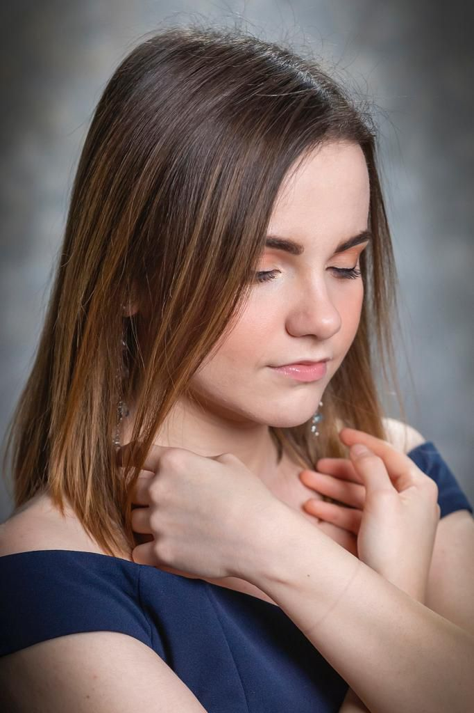
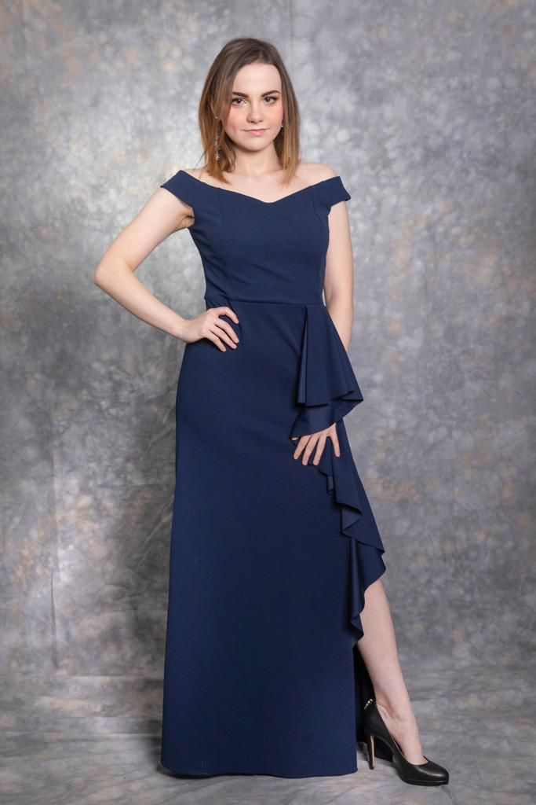
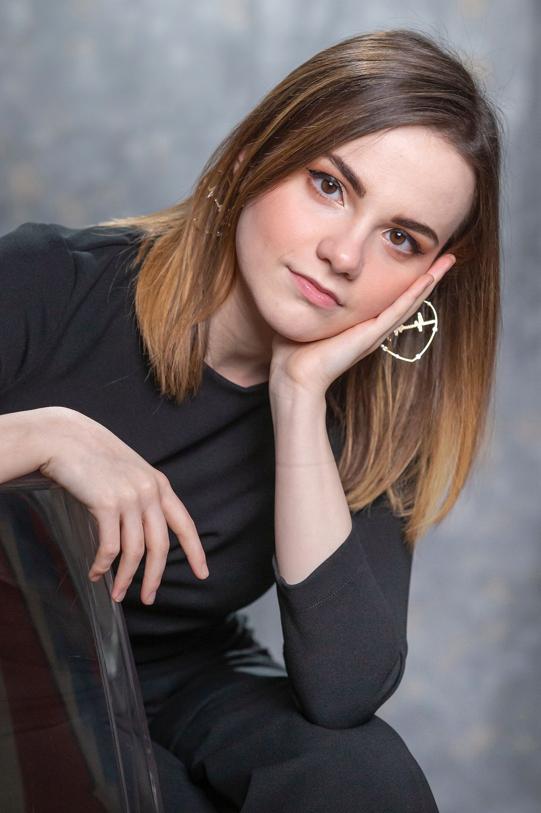
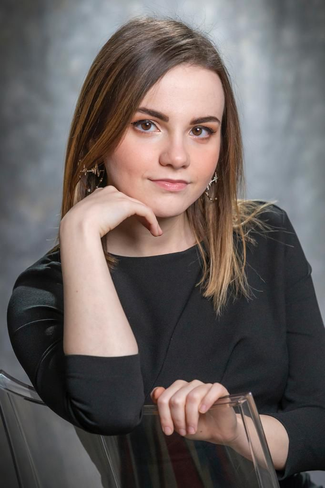
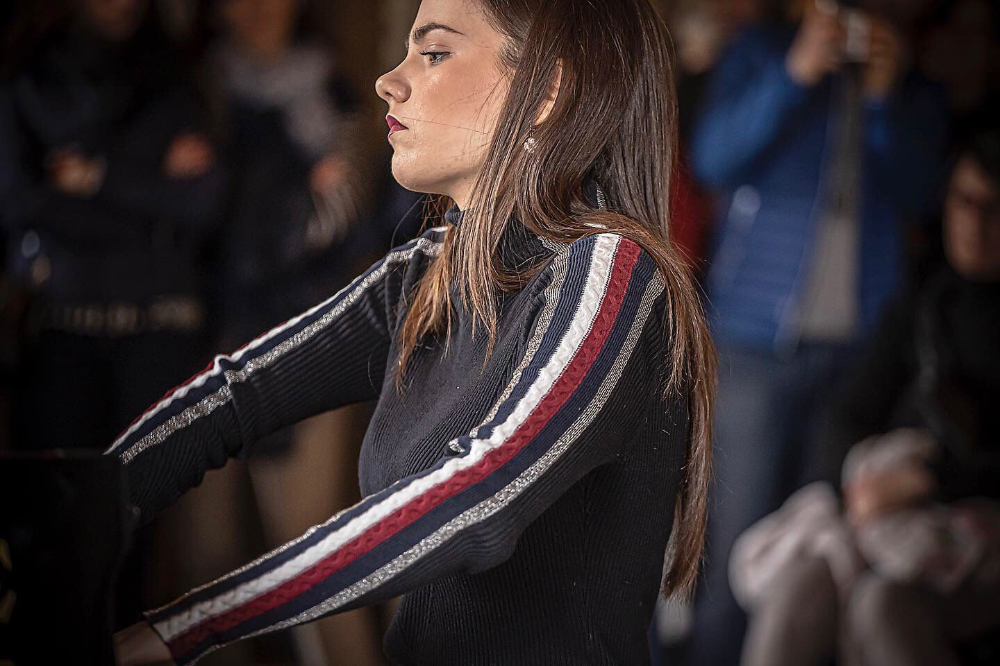

Galleria







“Considero Alessandra Assi una giovane musicista straordinaria. È dotata di un talento ricco di poesia, determinazione e intelligenza di altissimo livello, unito a una solidità davvero eccezionale. Le sue interpretazioni sono sempre interessanti e profondamente coinvolgenti.”
Pianista e insegnante di pianoforte con due Master, Alessandra Assi ha compiuto la propria formazione sotto la guida di maestri della grande scuola pianistica russa. Si è esibita come solista e in ensemble in varie sale da concerto tra Italia e Svizzera, tra cui lo Sporting Club di Monza, Piano City Milano, e il LAC di Lugano.
Ha ricevuto numerosi premi in concorsi nazionali e internazionali, fra cui il concorso Andrea Baldi di Bologna e il concorso Val Tidone.
Leggi Biografia Completa




Per richieste di concerti e collaborazioni: